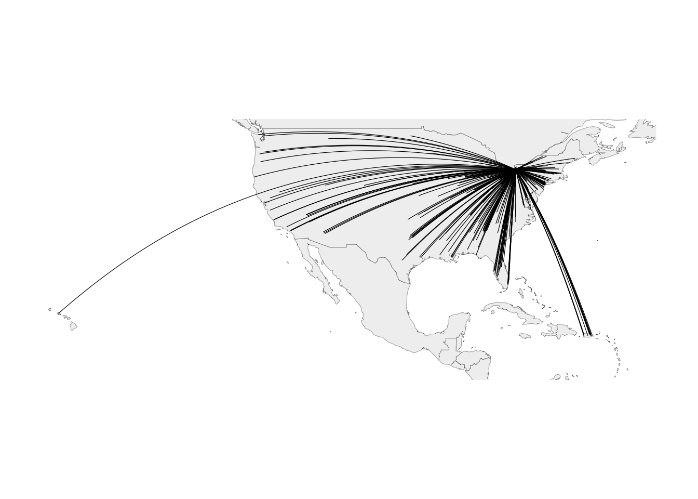
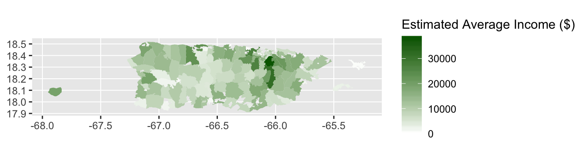

Visualizing Puerto Rican Homelessness in Western New York
Sara Peterson
Introduction
Homeless individuals are among the most marginalized populations of society. Homeless populations are further marginalized in data collection and representation. Even efforts specifically intended to record homeless data can inadvertently further marginalize certain groups of homeless individuals; entries with zip codes that were viewed as “incomplete” were taken out of an official 2015 data set used by the Homelessness Alliance of Western New York. This led to migrants from particular places being omitted from data analysis and official reports. Those individuals ignored in official reports includes 46 individuals who moved from Puerto Rico before becoming homeless in Erie County. This project seeks to understand and represent where people are coming from before becoming homeless in Western New York, using R to map the origins of these individuals and visually represents migration as movement along great circle lines. It specifically explores the phenomenon of individuals moving from Puerto Rico before becoming homeless in Western New York.
Materials and methods
Load Packages
Load any required packages in a code chunk (you may need to install some packages):
library(zipcode)
library(readr)
library(raster)
library(dplyr)
library(tidyverse)
library(tidycensus)
library(maps)
library(ggmap)
library(USAboundaries)
library(noncensus)
library(tigris)
library(sf)
library(geosphere)
library(RColorBrewer)
knitr::opts_chunk$set(cache=TRUE) # cache the results for quick compilingLoad Buffalo Data Set
Read in the anonymized data set provided by the Western New York Homeless Alliance
Buffalo_Shelter_Data <- read_csv("~/Desktop/Adam's Class/*final project/Buffalo Shelter Data (original).csv")## Parsed with column specification:
## cols(
## Zip = col_character(),
## `FAKE ID` = col_integer(),
## `Month of Entry` = col_character(),
## `Days In Program` = col_integer(),
## `Client Age` = col_integer(),
## `FAKE HOUSEHOLD ID` = col_number(),
## `Household Type` = col_character(),
## Gender = col_character(),
## Country = col_character(),
## `Country Abbreviation` = col_character()
## )Use the zipcode package to clean the zipcodes in the Buffalo Shelter Data CSV. This fixes the entries with “incomplete” zip codes that were thrown out of the data set so that they are useable.
clean.zipcodes(Buffalo_Shelter_Data)## [1] NA NA NA NA NA NA NA NA NA NAZip Code Data Frames
Use the zipcode package to create two data frames: one with the zipcodes for all of the United States, and other with zipcodes just for Puerto Rico. Rename the column heads so that they can later be more easily joined to the Buffalo Shelter Data.
data("zipcode")
names<-c("Zip","City","State","Latitude","Longitude")
colnames(zipcode, do.NULL = TRUE, prefix = "col")## [1] "zip" "city" "state" "latitude" "longitude"colnames(zipcode)<-names
USdataframe=zipcode
##USdataframe is the data frame with zip codes for all of the United States. You can filter to only have Puerto Rico
PRdataframe<-filter(zipcode,State=="PR")
head(PRdataframe)## Zip City State Latitude Longitude
## 1 00601 Adjuntas PR 18.18010 -66.74947
## 2 00602 Aguada PR 18.36329 -67.18024
## 3 00603 Aguadilla PR 18.44862 -67.13422
## 4 00604 Aguadilla PR 18.49899 -67.13699
## 5 00605 Aguadilla PR 18.46516 -67.14149
## 6 00606 Maricao PR 18.18215 -66.95880##PRdata frame is the data frame with zip codes for just Puerto RicoZip Code Boundaries
Use the tigris package to download the physical boundaries for all United States zip codes and convert to sf. Create an sf object for all United States zip codes, then filter to create an sf object for only Puerto Rico zip codes
#run the following line of code only once to download the boundary data -- it may take awhile
#zips<-zctas(cb = FALSE, starts_with = NULL, year = 2010, state = NULL)
options(tigris_use_cache = TRUE)
USzips<-zctas(cb = FALSE, starts_with = NULL, year = 2010)%>%
st_as_sf()
##USzips is the sf object with the physical boundaries for all US zip codes
PRzips<-zctas(cb = FALSE, starts_with = NULL, year = 2010, state = "PR")%>%
st_as_sf()
##PRzips is the sf object with the physical boundaries for PR zip codesGeocoding Buffalo Shelter Data
Join the Buffalo Shelter Data and the USdataframe by zip code, then use the sp package to assign coordinates using “Longitude” and “Latitude”. You can now plot the general location of where across the United States homeless people were coming from based on the centroid coordinates of their zip code origin.
BufDataLL_US<-inner_join(Buffalo_Shelter_Data, USdataframe, by= "Zip")
coordinates(BufDataLL_US)<-c("Longitude","Latitude")
#View(BufDataLL_US)Complete the same process with the PRdata frame: Join the Buffalo Shelter Data and the PRdataframe by zip code, then use the sp package to assign coordinates using “Longitude” and “Latitude”. You can now plot the general location of where within Puerto Rico homeless people were coming from based on the centroid coordinates of their zip code origin.
BufDataLL<-inner_join(Buffalo_Shelter_Data, PRdataframe, by= "Zip")
coordinates(BufDataLL)<-c("Longitude","Latitude")
#View(BufDataLL)
#Plot(BufDataLL)Summarizing the total counts from each zip code
Summarizing from origin in all of the United States
Summarize the data by the count of individuals coming from each of the different zip codes in the United States. You will create both centroid points and polygons with counts of individuals coming from each zip code.
#Join the Buffalo Shelter Data to the US zip code data
count_in_zips_US<-inner_join(Buffalo_Shelter_Data, USzips, by= c("Zip" = "ZCTA5CE10"))%>%group_by(Zip)%>%summarise(n=n())
#count_in_zips_US
#join the newly created data frame to the USdata frame to get the coodinates of the zip codes
count_in_zips_points_US<-left_join(count_in_zips_US,USdataframe,by= "Zip")
#set the coordinates for the centroid points
coordinates(count_in_zips_points_US)<-c("Longitude","Latitude")
#convert to sf
st_as_sf(count_in_zips_points_US)## Simple feature collection with 416 features and 4 fields
## geometry type: POINT
## dimension: XY
## bbox: xmin: -158.0354 ymin: 18.09281 xmax: -65.65987 ymax: 48.09714
## epsg (SRID): NA
## proj4string: NA
## # A tibble: 416 x 5
## Zip n City State geometry
## <chr> <int> <chr> <chr> <simple_feature>
## 1 00610 2 Anasco PR <POINT (-67.1...>
## 2 00676 2 Moca PR <POINT (-67.0...>
## 3 00683 1 San German PR <POINT (-67.0...>
## 4 00720 5 Orocovis PR <POINT (-66.4...>
## 5 00735 3 Ceiba PR <POINT (-65.6...>
## 6 00771 4 Las Piedras PR <POINT (-65.8...>
## 7 00772 4 Loiza PR <POINT (-65.8...>
## 8 00791 6 Humacao PR <POINT (-65.8...>
## 9 00907 5 San Juan PR <POINT (-66.0...>
## 10 00924 7 San Juan PR <POINT (-66.0...>
## # ... with 406 more rows#plot(count_in_zips_points_US)
#join the Buffalo Shelter Data to the USzips polygon to create polygons with counts of the number of individuals coming from each zip code
count_in_zips_polygons_US<-inner_join(Buffalo_Shelter_Data, USzips, by= c("Zip" = "ZCTA5CE10"))%>%st_as_sf()%>%group_by(Zip)%>%summarise(n=n())
#plot(count_in_zips_polygons_US)Summarizing from origin only in Puerto Rico
Summarize the data by the count of individuals coming from each of the different zip codes in Puerto Rico. You will create both centroid points and polygons with counts of individuals coming from each zip code.
#Join the Buffalo Shelter Data to the Puerto Rico zip code data
count_in_zips<-inner_join(Buffalo_Shelter_Data, PRzips, by= c("Zip" = "ZCTA5CE10"))%>%group_by(Zip)%>%summarise(n=n())
#count_in_zips
#create count_in_zips_points, which is a left join of the count_in_zips data frame that you just created and the PRdataframe that has the locations of the zip codes
count_in_zips_points<-left_join(count_in_zips,PRdataframe,by= "Zip")
#set the coordinates
coordinates(count_in_zips_points)<-c("Longitude","Latitude")
st_as_sf(count_in_zips_points)## Simple feature collection with 14 features and 4 fields
## geometry type: POINT
## dimension: XY
## bbox: xmin: -67.13604 ymin: 18.09281 xmax: -65.65987 ymax: 18.45113
## epsg (SRID): NA
## proj4string: NA
## # A tibble: 14 x 5
## Zip n City State geometry
## <chr> <int> <chr> <chr> <simple_feature>
## 1 00610 2 Anasco PR <POINT (-67.1...>
## 2 00676 2 Moca PR <POINT (-67.0...>
## 3 00683 1 San German PR <POINT (-67.0...>
## 4 00720 5 Orocovis PR <POINT (-66.4...>
## 5 00735 3 Ceiba PR <POINT (-65.6...>
## 6 00771 4 Las Piedras PR <POINT (-65.8...>
## 7 00772 4 Loiza PR <POINT (-65.8...>
## 8 00791 6 Humacao PR <POINT (-65.8...>
## 9 00907 5 San Juan PR <POINT (-66.0...>
## 10 00924 7 San Juan PR <POINT (-66.0...>
## 11 00926 1 San Juan PR <POINT (-66.0...>
## 12 00962 2 Catano PR <POINT (-66.1...>
## 13 00976 1 Trujillo Alto PR <POINT (-66.0...>
## 14 00983 7 Carolina PR <POINT (-65.9...>#plot(count_in_zips_points)
#create count_in_zips_polygons, which is the count_in_zips dataframe set as a sf to create polygons with the counts of people coming from each zip code in Puerto Rico
count_in_zips_polygons<-inner_join(Buffalo_Shelter_Data, PRzips, by= c("Zip" = "ZCTA5CE10"))%>%st_as_sf()%>%group_by(Zip)%>%summarise(n=n())
#plot(count_in_zips_polygons)Income For Puerto Rico Zip Codes
Use the tidycensus package to get the household income data from the US Census Bureau (census.gov). We will download the income data for each zip code (table B19001_001E is the average household income in the past 12 months)
IncomeZipCodeData <-get_acs(geography = "zcta", variables = "B19001_001E")Join IncomeZipCodeData with PRzips to make PR zips income file
PRzipsIncome<-left_join(IncomeZipCodeData, PRzips, by= c("GEOID" = "ZCTA5CE10"))Results
Mapping the Origin
Map of locations across the United States are people originate from before becoming homeless in Western New York
points_in_US<- data.frame(count_in_zips_points_US)
#use the map package to create a map of the area of interest
xlim <- c(-160, -55.5)
ylim <- c(12, 50)
BuffaloCoordinates=as.matrix(geocode("Buffalo, NY"))
map("world", col="#f1f1f1", fill=TRUE, bg="white", lwd=0.2, xlim=xlim, ylim=ylim)
#use geosphere package to create great circle lines between points of origin and Buffalo, NY
for (j in 1:length(points_in_US$n)) {
inter <- gcIntermediate(c(points_in_US[j,]$Longitude, points_in_US[j,]$Latitude), BuffaloCoordinates, n=100, addStartEnd=TRUE)
lines(inter, col="black", lwd=0.8)
}
As we can see, there are a number of lines originating in Puerto Rico. The next section will specifically explore the phenomenon of people coming from Puerto Rico before becoming homeless in Western New York…
Puerto Rico to Buffalo
Zip Code Density
Zoomed-in map of migration to Buffalo from Puerto Rico along great circle lines, weighted by the number from each place (darker = more people)
points <- data.frame(count_in_zips_points)
#use the map package to create a map of the area of interest
xlim <- c(-90, -60)
ylim <- c(18, 45)
BuffaloCoordinates=as.matrix(geocode("Buffalo, NY"))## Information from URL : http://maps.googleapis.com/maps/api/geocode/json?address=Buffalo,%20NY&sensor=falsepal <- colorRampPalette(c("#f2f2f2", "black"))
colors <- pal(100)
map("world", col="#f1f1f1", fill=TRUE, bg="white", lwd=0.2, xlim=xlim, ylim=ylim)
#use geosphere package to create great circle lines between points of origin and Buffalo, NY
for (j in 1:length(points$n)) {
inter <- gcIntermediate(c(points[j,]$Longitude, points[j,]$Latitude), BuffaloCoordinates, n=100, addStartEnd=TRUE)
colindex <- round( (points[j,]$n / 7) * length(colors) )
lines(inter, col=colors[colindex], lwd=0.8)
}
Choropleth map of density (number of people coming to Buffalo from each Puerto Rican zip code)
###use ggplot to create a choropleth map of density
ggplot(PRzips)+
geom_sf(lwd=0.2,fill="#f0f0f0")+
geom_sf(data=count_in_zips_polygons, aes(fill = n), col="transparent") +
scale_fill_gradient(low = "yellow", high = "red")+
labs(fill="Number People")
Map of centroid dots of location of origin; color and size indicate the number coming from that place
#create points as data frame to use in ggplot
points <- data.frame(count_in_zips_points)
#plot
ggplot(PRzips)+
geom_sf(lwd=0.2,fill="#f0f0f0")+
geom_point(data=points, colour="red", alpha=.7, aes(x=Longitude, y=Latitude, size=n))+
labs(size="Number People")
Thinking about Income
For fun, lets explore income of Puerto Rico by zip code.
ggplot(PRzipsIncome)+
geom_sf(data=PRzipsIncome, aes(fill = estimate), col="transparent") +
scale_fill_gradient(low = "white", high = "dark green")+
labs(fill="Estimated Average Income ($)")
This can then be overlaid with the number of people coming from each zip code.
ggplot(PRzipsIncome)+
geom_sf(data=PRzipsIncome, aes(fill = estimate),col="transparent") +
scale_fill_gradient(low = "white", high = "dark green")+
labs(fill="Estimated Average Income ($)")+
geom_point(data=points, aes(x=Longitude, y=Latitude, size=n),col="black")+
scale_size(limits = NULL, range = c(1, 3), breaks=c(1,3,7), trans = "identity", guide = "legend")+
labs(size="Number People")
Conclusions
Looking at the final map, which overlays the number of individuals from Puerto Rican zip codes with the average household income of the zip code, I was surprised to see that there does not seem to be a strong relationship between income and the number of individuals orginating from that zip code. The total sample size of people coming from Puerto Rico was too small to run any kind of meaningful statistical regression, but a visual examination shows that the zip codes of origin were not necessarily the ones with the lowest average annual incomedata.
On a broader scale, this project has successfully shown where people are coming from before becoming homeless in Western New York. My experience in developing this project has also demonstrated how easy it might be to use R to visualize migration data and the origins of homeless individuals. My ultimate hope is to compare this current data set with similar data sets from other Rust Belt cities, including Cleveland, OH, and Pittsburgh, PA to see if the phenomenon of homeless individuals originating in Puerto Rico extends beyond Buffalo and the Western New York region. This project will be an invaluable tool, as the code for this project could easily be run with other data sets substituted for the Buffalo Shelter Data.
References
The homelessness data set used in this project was generously provided by The Homelessness Alliance of Western New York The zip code income data was downloaded from the US Census Bureau (census.gov)